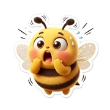
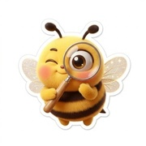
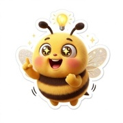
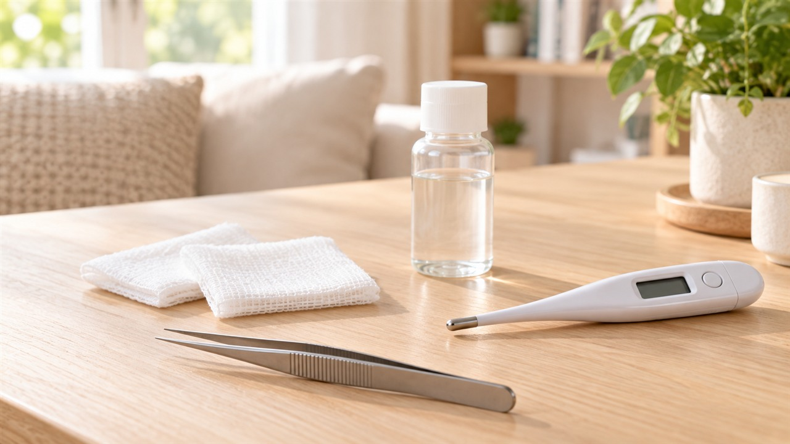
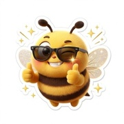

가을철 야외활동 후 피부에 진드기 물린 자국이나 붉은 반점이 생겨 쯔쯔가무시 검은 딱지인지 고민하시는 분들이 많습니다.
단순한 모기 물림인 줄 알고 넘겼다가 며칠 뒤 38도 고열이 시작되기도 합니다.
털진드기 애벌레에 물려 나타나는 특유의 검은 딱지와 수칙에 맞춘 핀셋 대처법을 차근차근 전해드립니다.

가을 나들이 후 생긴 붉은 자국, 단순 모기와 털진드기 체액 섭취의 차이점
선선한 가을 날씨에 단풍놀이나 등산, 주말 풀밭 나들이를 다녀오신 뒤 몸에 생긴 붉은 자국을 보며 갸우뚱하게 됩니다.
흔히 마주치는 모기는 피부를 무는 즉시 알레르기 반응이 일어나 심한 가려움과 붉은 팽진이 생깁니다.
긁지 말고 시원하게 냉찜질을 해주면 2~3일 안팎으로 가려움이 가라앉는 편입니다.
반면에 털진드기 애벌레는 피부의 체액을 섭취하며 물릴 때 통증이나 가려움이 거의 없습니다.
물린 순간에는 아무런 자각이 없어 물린 줄도 모른 채 일상으로 돌아오기 일쑤입니다.
1~2주의 잠복기를 거치며 균이 몸 안에서 증식한 뒤에야 비로소 전신 반응과 피부 표면의 변화가 시작됩니다.

환자 대부분에서 발견되는 검은 딱지의 모양과 숨은 위치
털진드기 애벌레에 물렸을 때 드러나는 핵심 표식은 바로 중심부가 까맣게 굳은 검은 딱지입니다.
공식 통계 자료를 살펴보면(2024년 공식 집계 기준) 물린 자리에 나타나는 검은 딱지 발견율은 약 83.1% 수준으로 집계됩니다.
크기는 대략 5~20mm 안팎이며 중심부가 분화구처럼 오목하고 까맣게 굳어 테두리에 붉은 띠가 형성됩니다.
찰과상으로 맺힌 피딱지와 다르게 손으로 눌러도 통증이 느껴지지 않으며 가려움도 없습니다.
다만 일부 인원에서는 딱지가 명확히 드러나지 않을 수 있으므로, 딱지가 보이지 않는다고 하여 감염 가능성을 배제하지 말아야 합니다.
털진드기는 습하고 부드러운 살결을 선호하므로 겨드랑이와 사타구니 안쪽을 꼼꼼히 확인해 주셔야 좋습니다.
속옷 밴드가 닿는 복부 라인, 가슴 아래쪽, 엉덩이 안쪽 접힌 부위도 세심히 살피는 지혜가 필요합니다.

살에 붙은 벌레를 손톱으로 잡아 뜯으면 곤란한 이유와 핀셋 요령
털진드기가 물고 지나간 자리에 맺힌 검은 딱지는 상처 흔적이므로 핀셋으로 억지로 파내거나 뜯지 말아야 합니다.
반면에 귀가 후 샤워를 하다가 살결에 여전히 단단히 박혀 흡혈 중인 참진드기 같은 벌레를 마주하면 손으로 뜯지 말아야 합니다.
손톱으로 쥐어뜯거나 마구 비틀면 벌레의 몸체만 떨어져 나가고 주둥이 부분이 살 속에 부러져 남습니다.
피부 속에 남겨진 이물질은 덧나서 심한 2차 염증을 일으키고 감염 가능성을 키우는 요인이 됩니다.
진드기를 떼어낼 때는 끝이 뾰족한 정밀 핀셋을 살결에 바짝 밀착시켜 머리 부위를 단단히 잡아야 합니다.
좌우로 비틀지 말고 위쪽 수직 방향으로 일정한 힘을 주어 천천히 들어 올려 온전히 분리해 주셔야 좋습니다.
떼어낸 자리는 소독용 알코올이나 빨간약으로 깨끗이 닦아내고 2주 동안 체온을 지켜보아야 합니다.

- 외출복 털기와 전신 샤워: 귀가 즉시 옷을 세탁기에 넣고 샤워하며 접힌 살결을 살핍니다.
- 핀셋 수직 들어 올리기: 벌레가 붙어 있다면 손으로 잡아채지 말고 핀셋으로 밀착해 수직으로 들어 올립니다.
- 2주 체온 관찰: 처치 자리를 소독한 다음 2주간 아침저녁으로 체온을 재며 38도 고열을 체크합니다.


몸살감기로 넘기기 쉬운 발열과 조기 처방약 복용의 중요성
가을철 쌀쌀한 환절기와 겹치다 보니 초기 고열과 오한을 단순 몸살이나 감기로 오해하기 쉽습니다.
물린 지 10일 무렵이 지나면 갑자기 38도 이상의 뜨거운 열이 오르고 으슬으슬 떨리며 두통이 찾아옵니다.
쯔쯔가무시는 고열 외에도 기침이나 목 통증 같은 호흡기 불편이 함께 나타날 수 있어 감기와 헷갈리기 쉽습니다.
호흡기 증세 유무로 속단하지 말고 풀밭 활동 이후 38도 고열이 이어진다면 신속히 전문 기관을 찾아야 합니다.
쯔쯔가무시 세균 감염은 독시사이클린 같은 테트라사이클린계 항생제를 제때 복용해야 호전됩니다.
초기에 알맞은 약제를 복용하면 2~3일 내에 열이 내려가고 기운을 차릴 수 있습니다.
진통제만 삼키며 버티다 보면 폐렴이나 신장 기능 저하 등 위중한 합병증으로 번질 위험이 커집니다.

참진드기 매개 위험 증세와 급격한 고열 시 대처 요령
가을철 숲길에서 흔히 언급되는 살인진드기라 불리는 중증열성혈소판감소증후군도 살펴두어야 합니다.
참진드기가 매개하는 바이러스성 상태로 털진드기와 달리 검은 딱지가 뚜렷하지 않은 경우가 흔합니다.
5~14일의 잠복기 이후 38도가 넘는 열과 함께 구토, 설사, 복통 같은 소화기 불편이 극심해집니다.
피검사 시 혈소판과 백혈구가 크게 떨어지며 치명률이 15~20% 수준으로 알려져 있습니다.
마땅한 항바이러스제가 없는 만큼 고열과 구토가 동반되면 머뭇거리지 말고 내과나 응급 진료를 찾아야 합니다.
접수 창구에서 최근 2주 이내에 등산이나 풀밭 나들이를 다녀왔다는 사실을 꼭 전달하시기 바랍니다.

1. 가을철 풀밭 방문 후 모기 물림과 다르게 가려움이 없으면서 검은 딱지가 생겼는지 접힌 피부를 살핍니다.
2. 진드기가 붙어 있다면 핀셋으로 수직 분리하고 상처를 소독한 뒤 2주간 체온을 재어둡니다.
3. 38도 이상의 열감이나 오한, 두통이 이어지면 감기약으로 버티지 말고 내과 진료진을 찾아 야외활동 이력을 알립니다.

가을 단풍을 만끽하는 즐거운 계절, 건강하고 쾌적한 나들이가 되시기를 응원합니다.
#진드기물린자국 #쯔쯔가무시 #쯔쯔가무시증상 #가을진드기 #진드기물렸을때 #검은딱지 #진드기검은딱지 #진드기제거 #털진드기 #야외활동건강